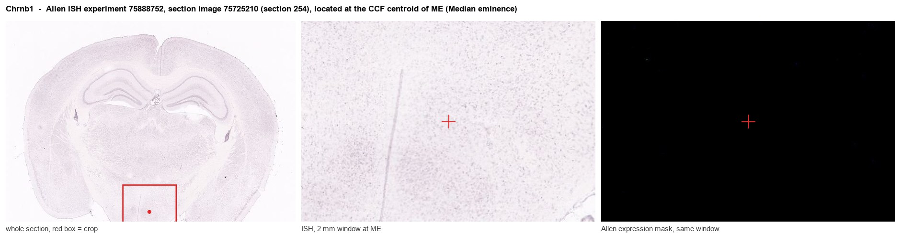
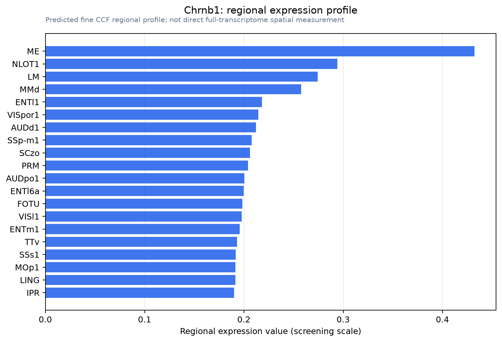

Chrnb1
Acetylcholine receptor subunit beta
Spatial tier: RESTRICTED · Class: ION_CHANNEL · Top region: ME (Median eminence) · Positive regions: 20/554
42.4Discovery Score
34.9Targetability Score
CEvidence grade C
What this means: Chrnb1: fine CCF profile is restricted toward ME (top regions: ME, NLOT1, LM, MMd, ENTl1; 20 positive regions); direct spatial validation is still required.
Function in ME: evidence, prediction, innovation
- Gene function
- CHRNB1 encodes the beta-1 subunit of the muscle-type nicotinic acetylcholine receptor, an obligatory component of the pentameric (alpha1)2-beta1-delta-epsilon receptor at the neuromuscular junction. It is not a component of neuronal nicotinic receptors, which use beta-2 and beta-4. Mutations in CHRNB1 cause congenital myasthenic syndromes, and the receptor is the autoantigen of myasthenia gravis and the target of curare-like neuromuscular blockers.
- Region function
- The median eminence is the neurohaemal circumventricular interface at the base of the hypothalamus, where tanycytes and fenestrated portal capillaries let hypophysiotropic peptides such as GnRH, TRH, CRH, GHRH and dopamine reach the anterior pituitary.
- Published in this region
- inferred No region-specific literature found. Low-level beta-1 nAChR mRNA and protein have been reported in rodent brain including hippocampus alongside skeletal muscle (Aishah et al. 2017), and beta-1-containing responses have been described in some central preparations (Dupuis et al. 2011), but nothing has been reported in the median eminence or in tanycytes.
- Predicted function
- Prediction: if beta-1 protein is genuinely present in the median eminence, the most plausible location is the tanycyte layer or the portal vascular wall rather than neurons, where a muscle-type nicotinic receptor could provide a fast cation conductance that couples cholinergic tone to tanycyte calcium signalling and hence to the permeability of the portal barrier and the release of hypophysiotropic peptides. Tanycyte-restricted Chrnb1 deletion using Rax-CreERT2, or local alpha-bungarotoxin, is predicted to blunt nicotine-evoked calcium waves in tanycytes and reduce the acute rise in portal GnRH or TRH after cholinergic stimulation; because the prior probability is low, the first requirement is alpha-bungarotoxin binding or RNAscope confirmation.
- Innovation
- ★★★☆☆ 3/5 Wholly unstudied in this region and easy to probe with alpha-bungarotoxin, but a skeletal-muscle-restricted subunit in the median eminence is more likely to be an annotation or cross-hybridisation artefact than real biology.
- Tools
- Chrnb1 knockout mice (perinatally lethal, so conditional alleles are needed); alpha-bungarotoxin (fluorescent conjugates for binding studies), d-tubocurarine and pancuronium; anti-AChR antibodies from myasthenia gravis research; Rax-CreERT2 for tanycytes and Gnrh1-Cre for the terminals in ME.
- References
Direct evidence located at the region

Allen ISH experiment 75888752, section image 75725210 (section 254): the section that contains the CCF centroid of Median eminence according to the Allen image-to-atlas alignment (reference_to_image), with a 2 mm window around that point. Left: whole section, red box = window. Middle: ISH signal. Right: Allen's expression-mask view of the same window. open this image in the Allen viewer
Look it up yourself: Allen Mouse Brain ISH for Chrnb1Allen reference atlas: ME (structure 10671)ABC Atlas MERFISH viewer(in the ABC Atlas choose dataset MERFISH-C57BL6J-638850-CCF, colour cells by gene "Chrnb1" or by parcellation_substructure "ME")All genes confined to ME + 3-D brain
Direct spatial evidence
MERFISH REGION LOCATOR

Regional expression figure

Predicted WMB × fine-CCF profile; not direct full-transcriptome spatial measurement.
Spatial profile
Evidence and specificity
- Evidence status
- PREDICTED_FINE
- Direct sources
- None; predicted localization only
- Exclusive threshold
- 12 positive regions out of 554
- Spatial specificity
- 0.282
- Top-region fraction
- 0.061
- Filter status
- PASS
Interpretation limits
- Cell-type-to-region projection is imputed expression, not direct spatial measurement.
- Adult reference atlases do not establish stability across age, sex, strain, state, or disease.
- Transcript abundance does not guarantee protein abundance or genetic-tool performance.